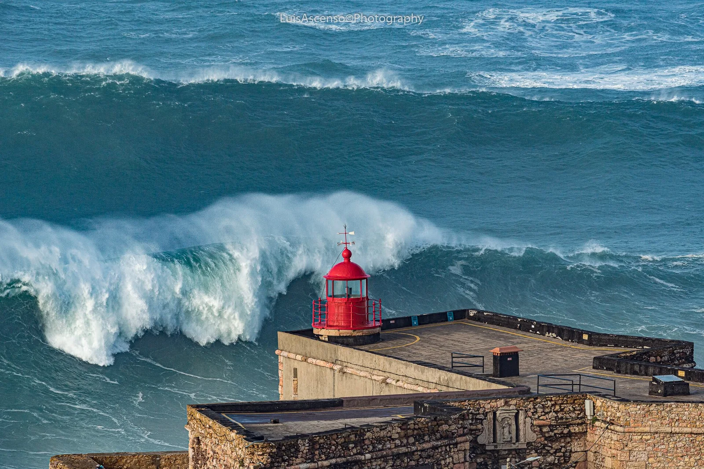

Nazaré — Praia do Norte
Portugal · surf

LE spot de vagues géantes : un canyon sous-marin propulse des murs d'eau pouvant dépasser 20 m, théâtre des records mondiaux de big wave.
- Lieu
- Portugal
- Niveau
- Expert
- Activités
- surf
- Type d'eau
- Mer / océan
- Coordonnées
- 39.60, -9.09 (position approximative du secteur)
Dangers à connaître
- Vagues XXL réservées au tow-in.
- Courants extrêmes.
Le conseil d'Ocean Buddy
Spot de très gros : à admirer depuis le phare, le surf y est réservé à l'élite mondiale.
Ouvrir dans Ocean Buddy Télécharger sur l'App Store
Source : Description historique Ocean Buddy · vérification externe en attente.